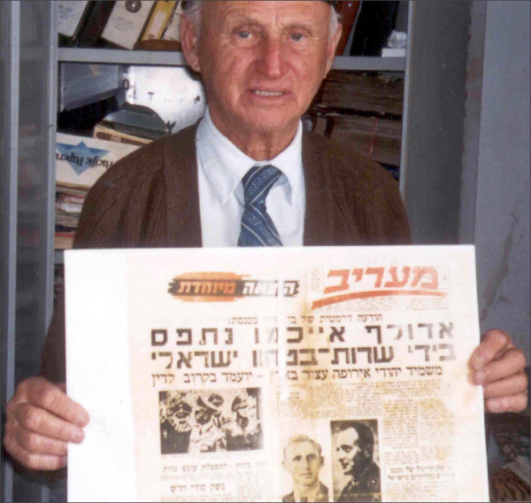

The Nazi Hunter and the Rebbe
For over fifty years, Tuvia Friedman a”h pursued Nazi war criminals in order to bring them to justice. At a certain point, he wondered whether to continue this work. A yechidus with the Rebbe convinced him to keep at it. * About the angel from heaven who protected him numerous times during the Holocaust, about his life’s work, and his connection with the Rebbe.

I met the famous Nazi hunter, Mr. Tuvia Friedman, in his office. He was a short, thin man, dressed simply and surrounded by old furnishings. He warmly welcomed me and immediately turned to the numerous organized files in the bookcase behind him. He handed me a thick file which held letters that he received from the Rebbe over the years.
“To me, the Rebbe is everything, and I have a lot to tell you about that.” Mr. Friedman asked me to join him on a tour of the institute which he had been running for forty-five years.
Mr. Friedman is known in the world as a Nazi hunter who has brought many Nazis to justice, work that was greatly encouraged by the Rebbe. His work entails documenting incriminating material against Nazis, in order to capture them and bring them to justice. When I met him, he had already written over 150 books documenting the Holocaust.
Despite his advanced age (when I met him he was 80; he died in January 2011 at the age of 89), he was still working as energetically as ever. He demanded of heads of states that Jewish property, robbed during the Holocaust, be returned. He wrote books and set up exhibits for the purpose of teaching the next generation what happened during the Holocaust.
“In the ghetto, under miserable conditions, I dreamed of taking revenge on them. I felt that the war would end and I would remain alive, and then I would do everything I could to take revenge on those human animals.”
When I asked him how he, a Holocaust survivor, became a Nazi hunter, he told me his story:
I was born in Radom in Poland in 5782/1922. A few days after the war began the Germans entered my city where 30,000 Jews lived. I still remember the SS troops in their black uniforms. They dealt murderous blows to Jews just for sport. Our family lost our livelihood when the Germans confiscated all the Jewish printing houses, including that of my father, Yaakov Friedman.
In the summer of 5700/1940, a thousand young Jews were sent from Radom to a labor camp. For a while I worked with many other young Jews, digging trenches in the area of the German border.
Over the years, I managed to escape the Nazis a few times. One time, I took advantage of a moment when nobody was paying attention to jump over a wall and run. I knew that it was very dangerous, but I figured it was freedom or death. I took a chance and made it. I felt that an angel was watching over me, an angel that stood by my side throughout the war years.
CHABAD CHASSIDIM GAVE BREAD TO THE HUNGRY
I was able to return to the ghetto in Radom where my family was. Two years later I was taken again by the Germans to work at the German military hospital. I had to drag sacks of flour, potatoes and coal. Starvation was rampant in the ghetto. There were about thirty Chabad Chassidim who devoted themselves to others, and gave out a bit of food to those who were starving and clothes and shoes to those who needed it.
After the death of my father, I felt even more strongly that I had to survive and take revenge on the Nazis. I miraculously made it, after tens of thousands of Jews from Radom were sent to labor and extermination camps, and the time when I was taken with my sister on a bus for a supposed prisoner exchange with the British.
After a short trip, we were brought to the cemetery. That was when we realized we had fallen into a trap. The passengers of the first bus were cruelly taken off the bus. We were on the second bus whose doors were opened later. My sister told me to jump from the bus; then we went straight up to the German officer named Kafka. She told him that we had gotten on the bus by mistake. He told us to wait on the side.
In the meantime, they shot all the Jews who were with us. The angel with me protected me this time too and we both returned to the Jewish ghetto.
A month passed and I was miraculously saved once again. The police were given an order to bring fifty young Jews to be killed in honor of Hitler’s birthday. I was caught with other boys at five in the morning and we waited. Suddenly, the same German officer, Kafka, came and my sister shouted, “You saved me and my brother before. Now he is being taken to be killed?!” He heard her and released me.
In October of 1943 the Germans transferred us to the Shkolna labor camp which, after a few months, was turned into a concentration camp. I was there with my friend, the Lubavitcher, Shmiel Boymelgreen. Together with him and some other friends we were able to run away through a drainage pipe. That same day, everyone in the camp was taken to Auschwitz.
From that point on, I lived in hiding. I hid in the cemetery while trying to locate partisans whom I could join. While hiding and moving around, locals turned me in to the Nazi soldiers. It was a little village and I was brought to a hut. One of the soldiers went to the command center to report having caught a Jewish spy, while I remained with a low level German officer. I made believe I was sleeping and the officer fell asleep. I got up, took a dagger from his belt and killed him. I fled with a revolver and a grenade. With weapons it was easier for me to survive among the Poles who tried to hand me over to the Germans.
In the winter of 5705, the Russian army conquered Radom from the Germans. I was able to come out of hiding, and I immediately joined the Polish police for the purpose of helping establish order in the city, and in order to help Holocaust survivors who returned to Radom from the camps.
REVENGE
From this point and on, I began realizing my dream of revenge on the Nazis. I went to Danzig where I was appointed as interrogator for the Polish security office. In this capacity, I arrested hundreds of German Nazis. They were put in jail, and I interrogated them and brought them to justice.
After a year in Danzig, I was faced with a fateful decision. I could either remain in Poland and rise in the ranks or leave it all to become a wandering Jew again, crossing borders in order to reach Eretz Yisroel. After much hesitation, I chose the harder route. I left the nice apartment I had been given by the Polish authorities, resigned from my job, and began a new life, as a Jew.
Within a short time, I arrived in Vienna with a group of Jews. Our goal was Eretz Yisroel, but something else came up for me.
I met Heinrich Rakutch, a friend from Radom, whom I knew personally in the Shkolna concentration camp. He surprised me when he said, “Do you remember SS Officer Konrad Buchmayer who murdered so many Jews in Radom? He is here in Vienna and he opened a store.”
I was overcome with emotion and said, “Take me there!” When we got there, we discovered that he was in an American prisoner of war camp near Saltzburg. We went there and introduced ourselves to the commander of the camp. He knew that many Nazis were concealing their real names and roles during the war to mitigate their sentencing. I dressed up like a German prisoner and was brought into the camp as a German captive in order to look for Buchmayer. Within a few hours I had found him and he was immediately called to the camp commander for interrogation.
Buchmayer said he did not remember me from the ghetto in Radom. I said to him, “You ran around with a heavy stick and hit us until the blood flowed. You even had nurses bandage us so you could hit us again afterward.” Buchmayer’s lips twitched and he said, “But I wasn’t the worst in Radom.”
The Americans encouraged me to continue questioning him. “Do you remember how you took out the little children from the Shkolna camp to Biala Street and shot them to death?” Buchmayer said, “I was following General Bottcher’s orders.”
Right after the interrogation the extradition process to send Buchmayer back to Poland began and he was put on trial there. He was sentenced to 12 years.
Then we located another Nazi by the name of Richard Sheigel who sent thousands of Jews from the ghetto in Radom to the extermination camp in Treblinka. The police in Vienna said that Sheigel had been arrested and released due to lack of evidence, but based on my testimony and that of Heinrich he was arrested that same night. He was interrogated and put on trial. He died in prison in Vienna awaiting trial.
Those were the first Nazis that I caught, but they were relatively small fry as compared to Brigadfuhrer Herbert Bottcher, head of the SS in Radom, and his assistant Oberstumbannfuher Wilhelm Blum, who were responsible for annihilating all 150,000 Jews from the Radom region. I caught them too and they were arrested. The assistant died in jail and the general was hung.
OFFICIAL NAZI HUNTER
The one who turned me into an official Nazi hunter was Asher ben Natan, head of the Bricha who brought Jews to Eretz Yisroel, and was the representative of the Hagana in Europe and then the first Israeli ambassador to Germany. He was actually the first Nazi hunter. During the war, he lived in Eretz Yisroel and even then he began interviewing Jews who had escaped the war. After the war, he was sent to Vienna where he worked to bring Holocaust survivors to Eretz Yisroel. At the same time, he continued the important work of capturing Nazis and bringing them to justice.
He asked me to help him, and I remembered my oath and remained in Vienna to arrest Nazis. We arrested over 250 Nazi criminals. That is how I became an official Nazi hunter.
In this complicated work I employed a large network of detectives and put in tremendous work to obtain documents and testimony, and get the testimony down in writing. We set up large archives in which we documented the enormous amount of material we had collected.
I made aliya in 1952 and married and lived in Haifa. I started a branch of Yad VaShem which I ran for three years. Here too, I put in great effort to document testimony of survivors of ghettos and extermination camps. I focused my attention on searching for arch-murderers, with Adolph Eichmann topping the list.
I put fifteen years of work into that project, starting in 1946 in Vienna. After much effort, I managed to obtain information on where Eichmann was located. I gave this information to my friend, Professor Tartikover, who gave it to Ben Gurion’s office. From that point on, the matter was out of my control.
The phone rang in my office in Haifa on Monday, 26 Iyar 5720/1960, at four in the afternoon. On the line was journalist Moshe Meisels of Maariv. For a change, his voice sounded emotional and he exclaimed, “Tuvia, don’t faint. The prime minister just announced in the Knesset that Adolph Eichmann was caught and is being brought to Israel.”
My hand holding the phone shook. I felt myself choke up. When I later saw the special edition of the newspaper with the headline, “Adolph Eichmann caught by Israeli security,” I was overcome with emotion.
***
Mr. Friedman stopped for a moment. He looked emotional and after thinking for a while, he took a file from which he removed some pages written with red ink. His hands shook as he said, “This is Eichmann’s letter. As per my request, he recorded in writing his share in the extermination of the Jews of Europe.”
EXTRAORDINARY YECHIDUS
The extremely difficult work in pursuing Nazis was at the expense of Mr. Friedman’s family life. He often made trips throughout Europe in order to gather testimony and to testify in court against Nazi criminals. There was almost no monetary benefit in this. His wife did not understand why her husband had to travel the world, when the Israeli government barely recognized his work and he was not bringing in money.
A son was born to them after seven years of marriage and they named him Yaakov Roni. When his father would leave to travel abroad, the boy would stand at the window and cry bitterly. Although his father brought him back expensive toys from Europe that were unobtainable in Eretz Yisroel, it did not make up for his absence.
Tuvia Friedman went to New York in 5730/1970 in the course of his work.
“Since I had visited New York several times and had passed by the house of the Lubavitcher Rebbe in Brooklyn, I wanted to meet with this celebrated figure in order to consult with him about my family and work, and to receive a bracha from him.
“I had a good friend in Paris by the name of Yitzchok (Isaac) Schneersohn (see box). He was nearly 80 and was very wealthy. He was a relative of the Rebbe. Whenever I went to Paris, I was his guest for Shabbos.
“He founded the Centre de Documentation Juive Contemporaine (Center of Contemporary Jewish Documentation) in Paris. The Rebbe visited this institute when he was in Paris in 1947. I wrote to R’ Yitzchok and told him I was in New York and asked him to arrange for me to meet with the Rebbe. A few days later I received a phone call from the Rebbe’s secretary, who gave me an appointment at one in the morning. He said that the Rebbe only received guests late at night. I was allotted a half an hour’s time.
“I arrived at the Rebbe’s beis midrash early. It was after two o’clock when the secretary told me that I could enter and he asked me not to stay long.
“When I entered the Rebbe’s room, he greeted me with a warm ‘Shalom Aleichem,’ and invited me to sit down. His eyes sparkled like diamonds. I was in awe of his noble appearance. I immediately felt that I was in the presence of an outstanding and authoritative personality who was way above me. This gave me the feeling of absolute trust in him. I felt confident that I could reveal all my secrets to him and I would be given good counsel along with a blessing.
“Before I could say anything, the Rebbe began the conversation. He said that he heard about me from Yitzchok Schneersohn and over the years he had followed my work in prosecuting Nazis. He said he knew all about my role in the capture of Eichmann and other German and Austrian war criminals.
“I told the Rebbe about our only child, Yaakov Roni who was eight years old; he was a skinny weak child who was bullied by the other children in school. I told him that whenever I traveled to Germany, he cried and begged me not to leave him, and my wife was also very opposed to my travels. On the other hand, I could not allow Nazis to go free without my testimony and documents.
“The Rebbe heard me out and then said: Although it says in the Torah that Hashem told Avrohom to do everything his wife Sarah told him, this concerned interpersonal matters, not matters between man and G-d. In fact, we find with the first man that he was expelled from Gan Eden because he listened to his wife Chava and ate from the Eitz HaDaas. It is a mitzva to remember and not to forget what Amalek did to us. It is a great mitzva of the Torah and an obligation upon all of us. It is a great privilege you have that you fulfill the obligation of the many with your devoted work. This is a tremendous mission given to you and you are not at liberty to abandon it. If you don’t do this work, nobody else will do it.
“Then the Rebbe added: As for your only son, Yaakov Roni, don’t take it to heart. Now he is still small, but he will grow and by the time he is 18, he will be big and strong. His name is Yaakov Roni and the verse says, ‘Ronu L’Yaakov, Simchu V’Tzahalu B’Rosh HaGoyim.’
“Then the Rebbe said something that I found greatly mysterious: It is important that you guard his soul from an alien and persuasive woman so that she won’t convince him with her smooth talk. As Shlomo HaMelech said in Mishlei, ‘To save you from a strange woman, from a foreign one who makes her words smooth.’ Yaakov Avinu worked for the sake of a woman, but Shimshon HaGibor was destroyed because of a woman. So protect your son from an alien woman, repeated the Rebbe, for he like Shimshon will be strong. And like Shimshon, he is an only child to his parents, and the wife of Manoach like your wife was barren for seven years before she gave birth to a son.
“However, I see that your son will sate his father and mother with nachas.
“Thus the Rebbe ended his astonishing prophetic words. At this point, I told the Rebbe that I had come to ask his advice about whether to publish an English language album about the Eichmann trial. I said that I had published it in Hebrew, but the sales had barely covered my expenses, which is why I hesitated to publish it in English.
“I gave the Rebbe a copy of the album in Hebrew and he looked through it for a few minutes. Then he said: I visited R’ Yitzchok Schneersohn in Paris and I saw his documentation and all the documents he has. People don’t have the patience to read an entire book about the destruction caused by the Holocaust. So it is worthwhile publishing this album so that people will look at the pictures. A picture makes a greater impression than text in a book. People look at the picture and the caption underneath it and understand what it’s about. I think they will publish this album in Brooklyn, and I think you will be successful in this. May Hashem help you.
“The bell rang a number of times to let me know that I had passed the time allotted to me, and that other people were waiting for their turn to see the Rebbe. The Rebbe escorted me to the door and blessed me.
“When I left, some Chassidim pounced on me and asked me what the Rebbe said. I summed up the conversation.
“This meeting with the Rebbe changed my life in two ways. I published the album in an English edition a short time later and it was a bestseller. It provided me with parnasa for twenty years! After every lecture I gave, a long line of people waited to receive an autographed book from me.
“However, I could not understand the second part of the yechidus. The Rebbe spoke about Roni being strong when he was 18, and yet he warned me that he should beware a strange woman. This statement remained a mystery to me for more than ten years.”
RONI
As an only child born after seven years, we spoiled Roni. When he was ten, we bought him a small boat and over the years, he learned to sail it. He took a course in diving, and diving became his hobby. He would often go with friends to the Sinai where he trained in diving in the Red Sea.
“At that time, he decided to enlist as a naval commando, an elite unit, against our wishes. He took numerous courses, strengthened his body, and was friendly with soldiers from elite units. It was only after many arguments that we agreed to sign our permission for him to become a naval commando.
“It was Chol HaMoed Pesach 5738/1978. Roni was training in diving on the Sinai beaches. On the third day of training, 19 Nissan, he was sitting in a boat surrounded by about thirteen friends. All were in good spirits. One of the girls in the boat challenged Roni, ‘If you’re as good a diver as you claim to be, let’s see you bring me a handful of sand from a depth of twelve meters.’
“Roni unhesitatingly jumped into the water and dove to the bottom of the sea and brought her a handful of sand. She then asked him to dive deeper and bring her sand. Roni did that too. But that wasn’t enough for her. She sent him diving a third time.
“This time, Roni was tired and he asked a fellow soldier to go along with him, but the latter refused. Roni felt he had to defend his honor and he dove a third time, but he didn’t come back up. Nobody took note of this until his body floated up and by then it was already too late.
“During the large funeral, I was suddenly reminded of what the Rebbe told me in yechidus ten years earlier. My knees began to shake.”
***
After Roni’s sudden death, his father published a book in which he wrote what the Rebbe said about his son. He called the book, HaNasich Roni Friedman V’HaRebbe M’Lubavitch (see box for the Rebbe’s reaction to the book). On the first page there is a picture of the Rebbe next to a picture of Roni. In the introduction it states the Rebbe’s prophecy about Roni.
On the next page there is another picture of the Rebbe with a photocopy of a dollar on which it is written, “6 Tishrei 5747, Thursday after midnight. The Lubavitcher Rebbe gave this dollar to me personally.”
Mr. Friedman went to the Rebbe a number of times after that yechidus. At the farbrengen on 6 Tishrei 5747, he sat at the table opposite the Rebbe. During the niggunim, the Rebbe called him over and shook his hand. At the end of the farbrengen, when the Rebbe gave out dollars to Tankistin, the Rebbe gave him a dollar.
When I expressed interest in the dollar, he took it out of his wallet along with a picture of the Rebbe and explained, “I hold on to the dollar and picture all the time. They are like a mezuza to me. You should know that the Rebbe is everything to me.”
CONTINUING THE BATTLE
As the Rebbe advised him, Tuvia Friedman continued his work in pursuing Nazis. One of his important endeavors was the war to abolish the statute of limitations regarding Nazi criminals. About fifteen years after World War II, Nazi hunters and the Jewish people feared that the international statute of limitations regarding Nazi criminals would go into effect and it would no longer be possible to bring them to justice. For nearly twenty years, from 5720 until 5739, Mr. Friedman waged a tough battle to abolish the statute of limitations. He was eventually successful.
For fifty years, Mr. Tuvia Friedman saw blessing in his efforts and thanks to his work, both directly and indirectly, over 2000 Nazi criminals were brought to justice. Thus may all enemies of G-d be punished!
THE FOOTSTEPS OF MOSHIACH
It is rare to hear firsthand testimony about Lubavitcher Chassidim in the ghettos. In his book, Mr. Tuvia Friedman relates the memories that came back to him when he visited the shul in the Radom ghetto when the ghetto was emptied of its inhabitants:
“Here, in this narrow ghetto, the brothers Shmuel and Mottel Boymelgreen led the Lubavitcher Chassidim. Every Shabbos, at the third meal, they would sing Chabad niggunim with great concentration and eat salted fish tails with challa that their mother had baked for the HaMotzi bracha on a whole loaf.
“I was also reminded of the Chassidic brothers, Moshe and Meir Perl, and what Meir had once said about the verse, ‘I will set a candle for My anointed one,’ that the footsteps of Moshiach can already be heard and soon, in our days, he will come.”
THE REBBE RAYATZ AND THE REBBE SUPPORT THE CENTER FOR DOCUMENTATION
Mr. Friedman mentioned R’ Yitzchok Schneersohn who ran the CDJC in Paris, which was visited by the Rebbe. Who was this Yitzchok (Isaac) Schneersohn?
Yitzchok Schneersohn was a descendent of the Tzemach Tzedek. His wife was also related to Beis Rebbi. Over the years, he changed tracks and became a rav m’taam (government appointed rabbi) in Chernigov. Nevertheless, the Rebbeim regarded him warmly.
He lived in Paris, and after the war he started an institute for documentation, whose purpose was to locate Nazi criminals and bring them to justice. The Rebbe Rayatz sent him a letter of support for his work dated 26 Adar 5707:
I was pleased to hear your story about the organization that you founded for the purpose of collecting all documentation and information about our brethren, the Jewish people in France and neighboring countries, during the reign of the Nazi enemy, may their name and memory be erased for eternity, and of your good work in saving thereby a number of Jewish children from assimilation, G-d forbid, and restoring the wealth and property of our brethren to their owners and heirs.
The goal of this organization and its activities do not require approbation and recommendation as its benefit is obvious to all. I do not doubt that you will find a listening ear in the places that you turned to for help, and surely, from here on in the work of the organization will be publicized – that which can be publicized – amongst the public at large. It would be fitting to publicize the matters in Yiddish for the broader avenues of our people.
In the margin, the Rebbe Rayatz added:
Enclosed are fifty shekel (i.e. dollars), which is my personal participation in the work of this organization.
About a month and a half later, the Rebbe Rayatz’s son-in-law visited Yitzchok Schneersohn. This was when he went to Paris to meet his mother, Rebbetzin Chana, who had left the Soviet Union. Yitzchok Schneersohn showed him the work he was doing.
On 7 Tammuz 5712, the new Rebbe wrote him:
I remember what the Rebbe, my father-in-law, told me about the center you made and the results we can hope to see from it, and he also made a personal contribution towards this purpose. So there is no need for my consent, and yet, I follow the king in expressing encouragement for what you have done, and through my office you will also receive my participation for the work of the center in the amount of 15,000 franc.
When Mr. Tuvia Friedman visited the Rebbe, the Rebbe mentioned his personal knowledge of the institute in Paris.
LETTER FROM THE REBBE TO MR. TUVIA FRIEDMAN
In a postscript to a letter to Mr. Friedman, the Rebbe responded to the booklet he published after the death of his son. The Rebbe said he was very unsure about whether this should be written about, but felt Mr. Friedman had to and he hoped it would be taken in the right way. After apologizing in advance, the Rebbe expressed his dismay that the booklet made no mention of the eternity of the soul, a fundamental concept and one that many nations share.
The immediate reaction to the eternity of the soul, said the Rebbe, ought to be the doing of good deeds that will give nachas to the neshama in the world of truth. The Rebbe made some suggestions as to what should be done in the future: 1) providing a scholarship for at least two children to maintain them in yeshiva where they learn only Torah all day, and which is founded on fear and love of Hashem, especially as per the teaching of the Alter Rebbe that says that this leads to Ahavas Yisroel; 2) in line with his life’s work it would be proper to do something, and if possible also provide a scholarship in his son’s memory, for youth who were coming from the Soviet Union, to help them get acclimated to a life of Torah and mitzvos; 3) to run his home on the principals of Torah and mitzvos, improving in this as discussed by him and his wife, in such a way that it is apparent to all visitors that this is in memory of their son and l’ilui nishmaso. This is because the soul continues to ascend, and Torah and mitzvos done in this world give pleasure to the neshama and help it ascend.
Berger. "The Nazi Hunter and the Rebbe." Beis Moshiach, no. 875 (April 10, 2013).